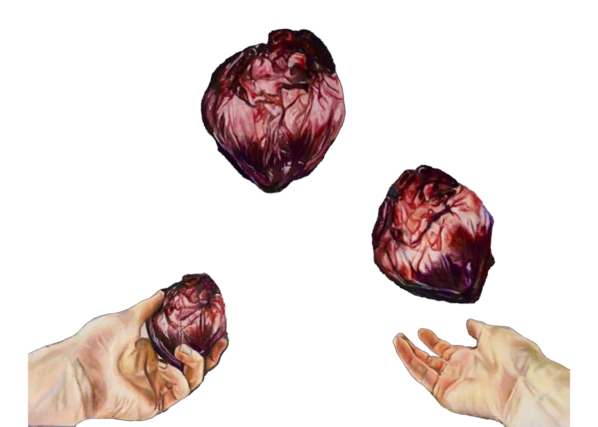

Observing our exterior increases awareness of bodily sensations aiding us to evaluate our present emotional state. This insight gives me a life hack.
I would never look into a mirror before public speaking because I do not need to be more aware of my racing heart.
I would, however, view my reflection when dancing in my bathroom mirror to even further appreciate the contentment that permeates my body and mind
